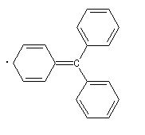

Sage of the Arctic
New Radicals
Fresh hay and barley in the feed store can barely mask the fermenting barley and hops of moonshine. "Jeremiah, how good to see one of our regular customers. It's been a bad day," the malster sighed. "I've been working on new drink ingredients, and I instead made something which got everyone sick! Thank goodness it's the winter, and we can blame it all on the weather. I think this is what I made"

"Hm. Very interesting. This is the first I've heard of such a thing, Malster Gomberg. Are you sure you made exactly this? I think there are several more equally likely structures."
"Oh? How many more than this?"